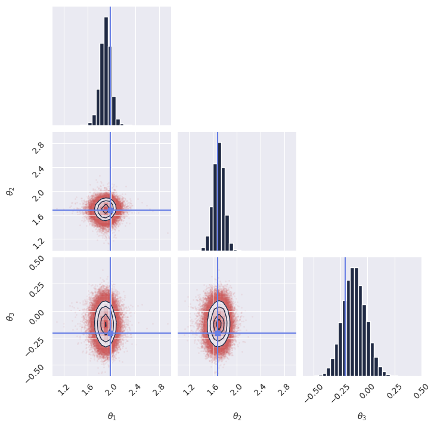

15-minute quick start#
Welcome to GenSBI! This page is a quick guide to get you started with installation and basic usage.
Installation#
GenSBI is in early development. To install, clone the repository and install dependencies:
pip install git+https://github.com/aurelio-amerio/GenSBI.git
If a GPU is available, it is advisable to install the cuda version of the package:
pip install "GenSBI[cuda12] @ git+https://github.com/aurelio-amerio/GenSBI.git"
Requirements#
Python 3.11+
JAX
Flax
(See
pyproject.tomlfor full requirements)
Basic Usage#
The most basic usage of GenSBI involves defining a simulation-based inference pipeline using one of the provided recipes. Here is a minimal example of setting up a flow-based inference pipeline using Flux1:
1# %% Imports
2import os
3
4# Set JAX backend (use 'cuda' for GPU, 'cpu' otherwise)
5os.environ["JAX_PLATFORMS"] = "cuda"
6
7import grain
8import numpy as np
9import jax
10from jax import numpy as jnp
11from numpyro import distributions as dist
12from flax import nnx
13
14from gensbi.recipes import ConditionalFlowPipeline
15from gensbi.models import Flux1, Flux1Params
16
17from gensbi.utils.plotting import plot_marginals
18import matplotlib.pyplot as plt
19
20
21
22
23# %%
24
25theta_prior = dist.Uniform(
26 low=jnp.array([-2.0, -2.0, -2.0]), high=jnp.array([2.0, 2.0, 2.0])
27)
28
29dim_obs = 3
30dim_cond = 3
31dim_joint = dim_obs + dim_cond
32
33
34# %%
35def simulator(key, nsamples):
36 theta_key, sample_key = jax.random.split(key, 2)
37 thetas = theta_prior.sample(theta_key, (nsamples,))
38
39 xs = thetas + 1 + jax.random.normal(sample_key, thetas.shape) * 0.1
40
41 thetas = thetas[..., None]
42 xs = xs[..., None]
43
44 # when making a dataset for the joint pipeline, thetas need to come first
45 data = jnp.concatenate([thetas, xs], axis=1)
46
47 return data
48
49
50# %% Define your training and validation datasets.
51train_data = simulator(jax.random.PRNGKey(0), 10_000)
52val_data = simulator(jax.random.PRNGKey(1), 2000)
53# %%
54def split_obs_cond(data):
55 return data[:, :dim_obs], data[:, dim_obs:] # assuming first dim_obs are obs, last dim_cond are cond
56
57
58# %%
59
60batch_size = 128
61
62train_dataset_grain = (
63 grain.MapDataset.source(np.array(train_data))
64 .shuffle(42)
65 .repeat()
66 .to_iter_dataset()
67 .batch(batch_size)
68 .map(split_obs_cond)
69 # .mp_prefetch() # Uncomment if you want to use multiprocessing prefetching
70)
71
72val_dataset_grain = (
73 grain.MapDataset.source(np.array(val_data))
74 .shuffle(42)
75 .repeat()
76 .to_iter_dataset()
77 .batch(batch_size)
78 .map(split_obs_cond)
79 # .mp_prefetch() # Uncomment if you want to use multiprocessing prefetching
80)
81
82# %% Define your model
83params = Flux1Params(
84 in_channels=1,
85 vec_in_dim=None,
86 context_in_dim=1,
87 mlp_ratio=3,
88 num_heads=2,
89 depth=4,
90 depth_single_blocks=8,
91 axes_dim=[
92 10,
93 ],
94 qkv_bias=True,
95 dim_obs=dim_obs,
96 dim_cond=dim_cond,
97 theta=10*dim_joint,
98 rngs=nnx.Rngs(default=42),
99 param_dtype=jnp.float32,
100)
101
102model = Flux1(params)
103
104# %% Instantiate the pipeline
105
106pipeline = ConditionalFlowPipeline(
107 model,
108 train_dataset_grain,
109 val_dataset_grain,
110 dim_obs,
111 dim_cond,
112)
113
114# %% Train the model
115rngs = nnx.Rngs(42)
116pipeline.train(
117 rngs, nsteps=5000, save_model=False
118) # if you want to save the model, set save_model=True
119
120# %% Sample from the posterior
121
122new_sample = simulator(jax.random.PRNGKey(20), 1)
123true_theta = new_sample[:, :dim_obs, :] # extract observation from the joint sample
124x_o = new_sample[:, dim_obs:, :] # extract condition from the joint sample
125
126samples = pipeline.sample(rngs.sample(), x_o, nsamples=100_000)
127# %% Plot the samples
128plot_marginals(
129 np.array(samples[..., 0]), gridsize=30, true_param=np.array(true_theta[0, :, 0]), range = [(1, 3), (1, 3), (-0.6, 0.5)]
130)
131plt.savefig("conditional_flow_pipeline_marginals.png", dpi=100, bbox_inches="tight")
132plt.show()
133
134# %%
{kind=link}

Note
If you plan on using multiprocessing prefetching, ensure that your script is wrapped
in a if __name__ == "__main__": guard.
See https://docs.python.org/3/library/multiprocessing.html
See the full example notebook my_first_model for a more detailed walkthrough, and the Examples page for practical demonstrations on common SBI benchmarks.
Citing GenSBI#
If you use this library, please consider citing this work and the original methodology papers, see references.
@misc{GenSBI,
author = {Amerio, Aurelio},
title = "{GenSBI: Generative models for Simulation-Based Inference}",
year = {2025},
publisher = {GitHub},
journal = {GitHub repository},
howpublished = {\url{https://github.com/aurelio-amerio/GenSBI}}
}